Winter crafting carries a different energy than any other season's. With more time spent indoors and less daylight to fill, a hands-on project feels less like a chore and more like an actual way to pass a quiet evening, and most winter crafts double as genuinely useful home decor once finished.
None of the ideas below require advanced skills or expensive materials. Most use things already sitting in a craft drawer, a recycling bin, or a nearby hardware store.


20 Winter Craft Ideas
1. Cozy Blanket Ladder Decor
A blanket ladder blends decor and storage in a way few other winter crafts manage, giving throws somewhere stylish to live instead of being folded away.
A simple wood ladder, built or repurposed, holds several layered blankets at once, which doubles as an easy styling trick on its own.
A natural wood finish tends to add more warmth than a painted one, keeping the whole piece feeling cozy rather than crafted.
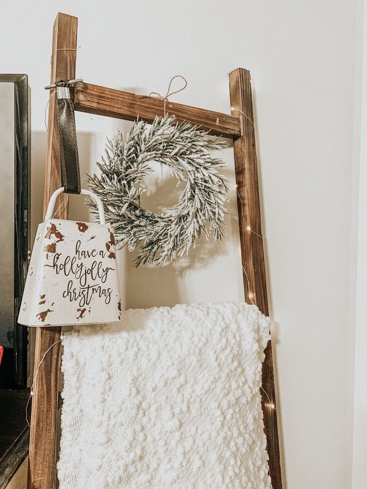
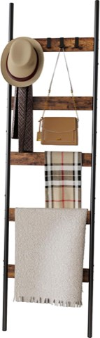
Farmhouse 5-Tier Blanket Ladder with 4 Removable Hooks, Wall Leaning Rack
Shop on Amazon2. Hand-Painted Ceramic Bowls
Painted ceramics carry a personal touch that mass-produced decor can't replicate.
A simple winter motif, a few snowflakes, a muted stripe, a dusted frost effect, tends to look more refined than an overly detailed design.
Beyond display, a finished bowl works well for holding keys, candles, or small trinkets, giving the craft a practical second life.
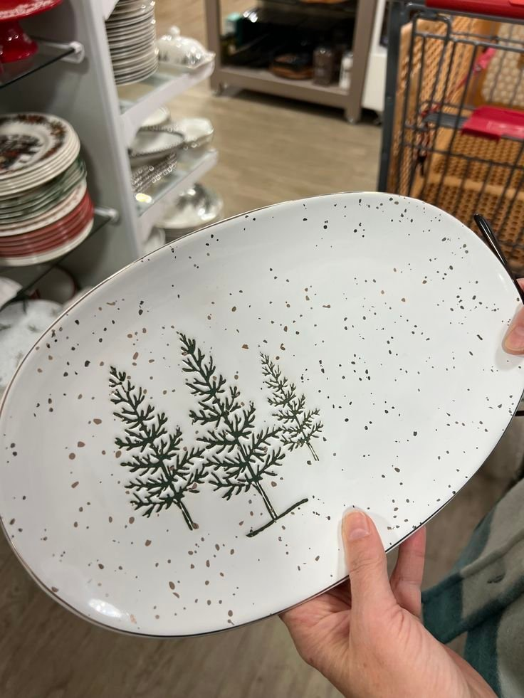
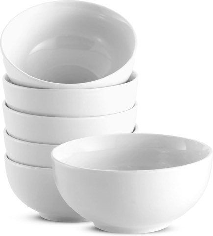
KooK Porcelain Soup and Pasta Bowls, White, Microwave and Dishwasher Safe
Shop on Amazon3. DIY Winter Shadow Boxes
A shadow box lets a small winter scene tell its own quiet story, rather than just stacking decorative objects on a shelf.
Filling the box with miniature trees, a felted figure, birch branches, and a bit of faux snow builds a scene that feels subtle rather than cartoonish.
The enclosed format also protects the small details inside, which makes it a durable option for display year after year.
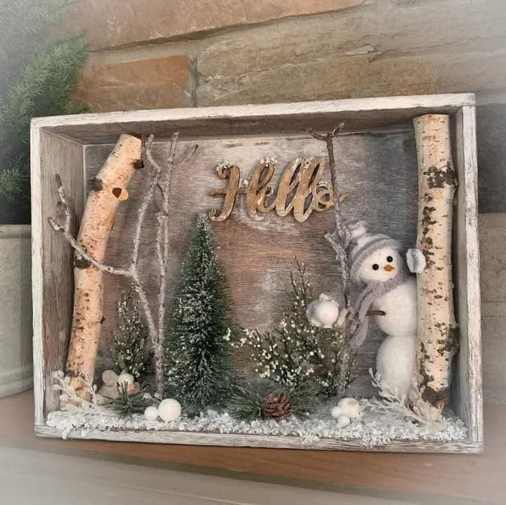

4. Winter Entryway Hooks Decor
A crafted set of hooks adds both style and real function to an entryway that often needs a little more organization in winter.
Wrapping plain hooks in twine, adding a small painted detail, or mounting them on a reclaimed wood board all elevate them past purely utilitarian hardware.
Sticking to neutral colors keeps the hooks from adding visual clutter to a space that's already handling coats, scarves, and bags.
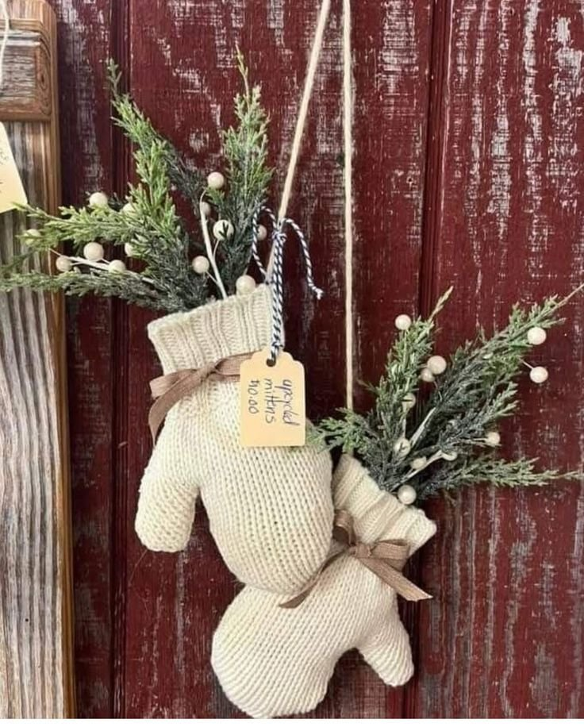
5. Paper Snowflake Window Decor
This classic craft never really goes out of style, and a modern version with clean, simple lines keeps it from feeling dated.
Folded and cut from plain paper, snowflakes cost almost nothing and come together in a few minutes each.
Clustering different sizes together on a window creates far more visual interest than a single snowflake taped up alone.
Funrous 48 Sets Winter Snowflake Craft Kit, Hanging Paper Ornaments
Shop on Amazon6. Handmade Mug Cozies
Functional crafts tend to get more actual use than purely decorative ones, and a mug cozy is about as functional as winter crafting gets.
A simple knit or felt sleeve wrapped around a mug protects hands from the heat while adding a cozy, handmade touch to an everyday object.
They also make for an easy, low-cost gift for anyone who'd rather receive something practical than purely decorative.
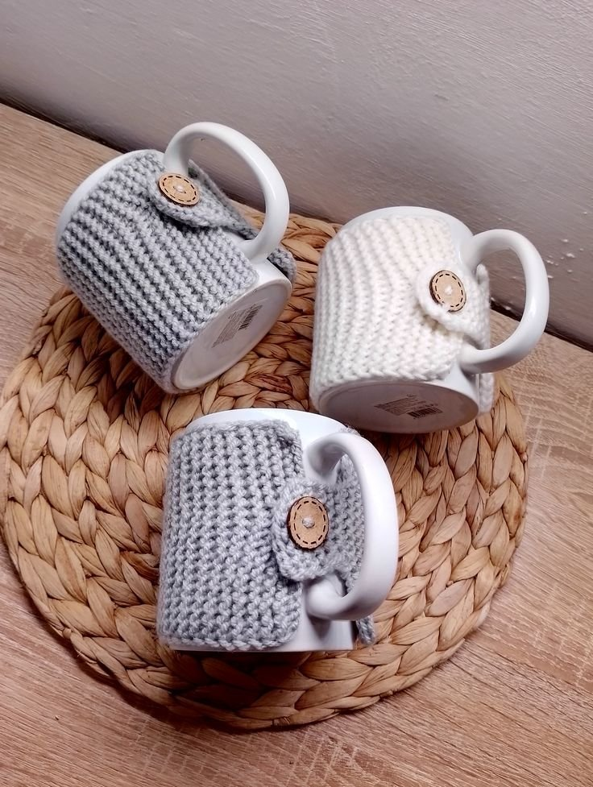
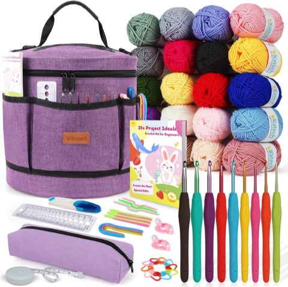
Katech Crochet Kit for Beginners, Complete Set with Yarn, Hooks and Bag
Shop on Amazon7. Winter Terrariums
Terrariums aren't just a summer project, a winter version, built with pale moss, small pinecones, and a touch of faux snow, feels calm and genuinely decorative.
A simple glass container is all that's needed as a base, which makes this an easy craft to scale up or down depending on the space available.
They work especially well on a desk or side table, where a larger centerpiece might feel out of place.
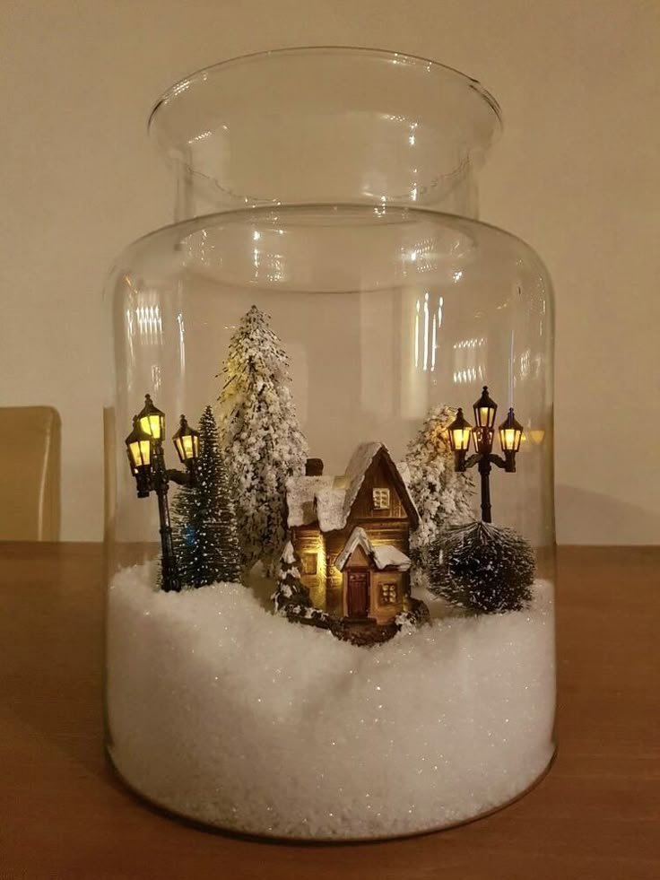
8. Wood Slice Ornaments
Wood slice crafts carry a rustic, timeless quality that flashier ornaments rarely achieve.
A simple painted design, a wood-burned pattern, or just the natural grain left as-is all work well on a basic wood slice base.
Sealing the finished ornaments protects them for reuse year after year, which makes this one of the more durable crafts on the list.
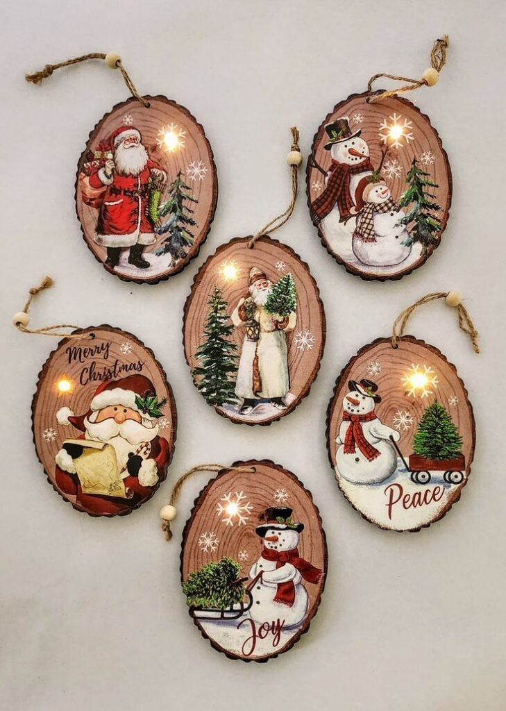
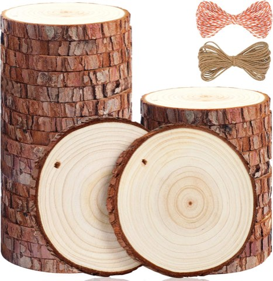
Natural Wood Slices, 30 Pcs, 3.5 to 4 Inch, Predrilled with Hole, Craft Kit
Shop on Amazon9. Handmade Fabric Table Runners
A winter table deserves the same styling attention as the rest of the home, and a fabric runner is one of the simplest ways to give it that.
A runner softens the hard edges of a table and immediately makes a bare surface look considered rather than unfinished.
Choosing a textured fabric, a woven stripe, a subtle fringe, adds interest without requiring a bold pattern or color.
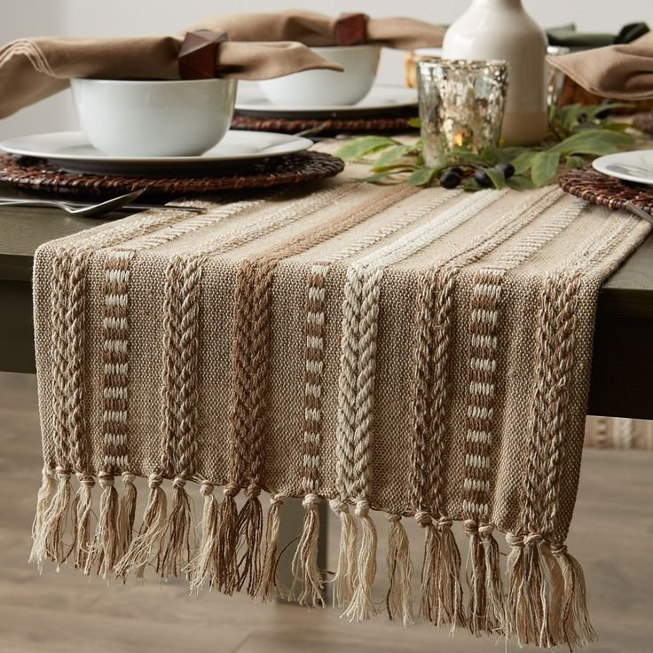
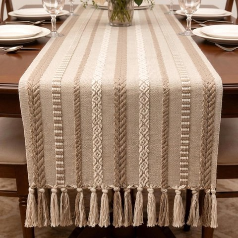
Encasa Boho Cotton Table Runner, Woven Jacquard with Tassels, Beige, 13 x 118 Inch
Shop on Amazon10. DIY Snowy Bottle Decor
Glass bottles are an underrated base for a winter craft, especially once given a frosted finish that mimics fresh snow.
A simple frosting spray or Epsom salt coating transforms an ordinary bottle into something that reads as genuinely seasonal.
Lined up on a windowsill or shelf, a small collection of snowy bottles makes for an easy, low-cost display.
11. Wooden Tray Winter Centerpieces
A tray does real work anchoring a winter centerpiece, keeping a collection of small objects from looking scattered across a table.
Grouping candles, greenery, pinecones, and a few ceramic pieces onto one wooden tray turns loose items into a single, cohesive display.
Varying the height of the pieces within the tray adds visual interest that a flat, uniform arrangement doesn't achieve on its own.
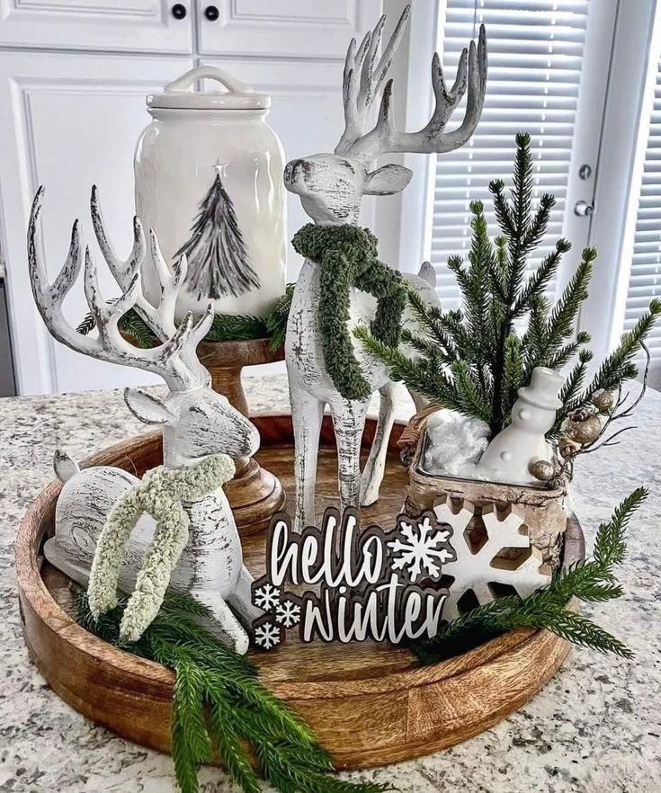
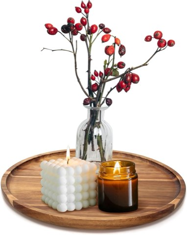
Acacia Round Wood Serving Tray for Ottoman, Coffee Table and Dining Table Decor
Shop on Amazon12. Winter Quote Wall Prints
Combining words with design gives a craft a more personal, thoughtful feel than purely decorative pieces often have.
A short winter phrase, printed or hand-lettered and framed, adds a bit of warmth to a wall without requiring any painting or sculpting skill.
Printing on textured paper rather than plain cardstock adds a subtle depth that makes the finished print look more considered.
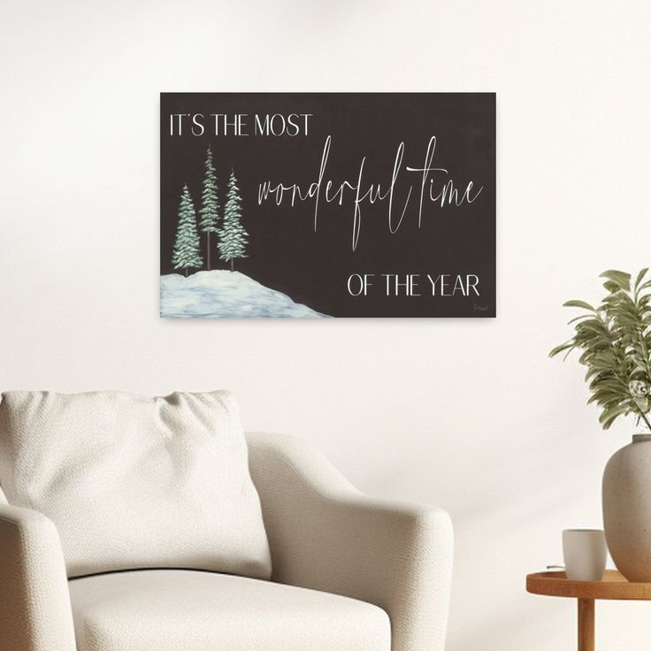
Americanflat 11x14 Picture Frame, Matted to 8x10, Black Wood
Shop on Amazon
13. Handmade Knit Pillow Covers
Advanced knitting skills aren't required for this one, a simple, chunky stitch pattern produces a genuinely soft, substantial pillow cover.
Swapping out a few thin pillow covers for knit ones can transform how an entire sofa feels, even without changing anything else in the room.
The texture alone adds a cozy quality that a smoother, flatter pillow cover just can't replicate.
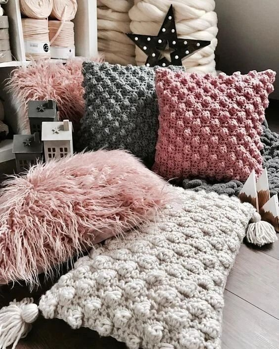
14. Painted Pinecone Decor
Pinecones are an easy, often free material that tends to get overlooked as a serious decor option.
A light dusting of white or gold paint on the tips, rather than a full saturated coat, keeps the natural shape visible while adding a bit of shimmer.
Scattered in a bowl or across a tray, painted pinecones make for quick, low-effort winter styling almost anywhere in the house.
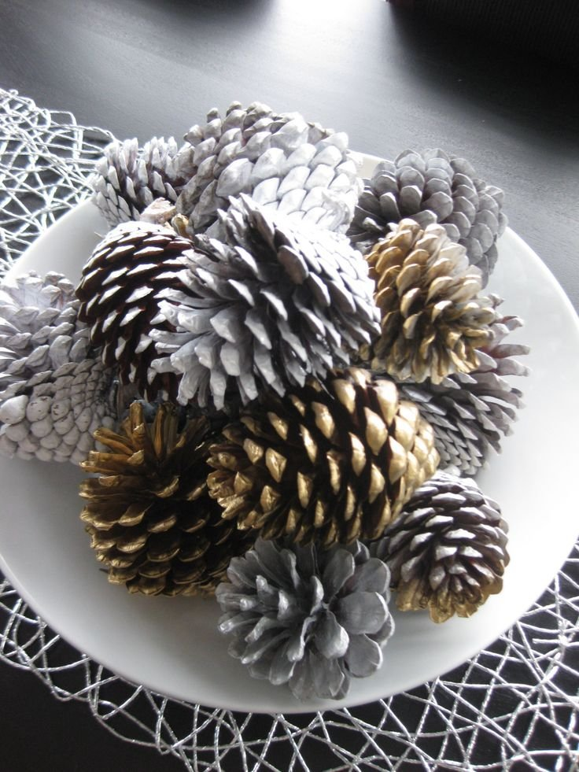
15. Winter Scented Candles
Scent does as much for a winter atmosphere as any visual decor, which makes a hand-poured candle a genuinely worthwhile craft.
Winter scents like cedar, pine, clove, or vanilla capture the season without leaning into anything overly sweet.
Pouring the wax into a neutral jar keeps the finished candle flexible enough to match any room it ends up in.
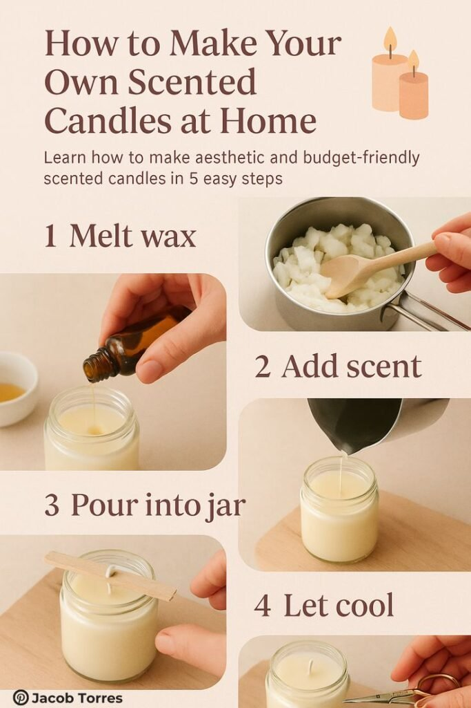
16. Cozy Fabric Wall Hangings
A fabric wall hanging fills empty wall space with warmth rather than the visual weight a framed piece sometimes carries.
Wool, muslin, or a loosely woven textile on a simple wooden dowel comes together quickly and reads as intentional rather than improvised.
A bare wall in winter can make a whole room feel colder than it actually is, and a soft textile hanging is an easy fix for that.
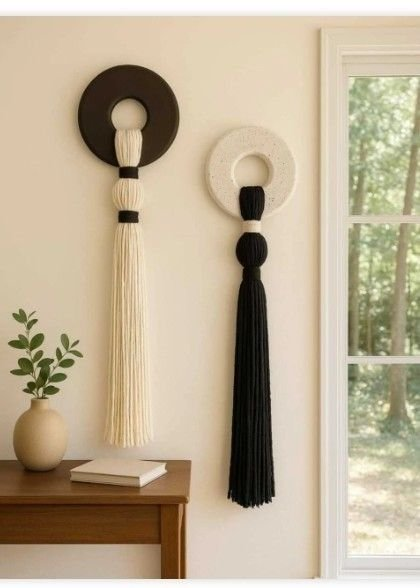
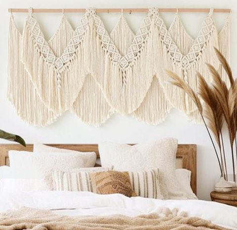
Macrame Wall Hanging with Wooden Dowel and Tassels, 47 x 25 Inch, Cream
Shop on Amazon17. Felt Garland for Mantels
Felt is one of the more forgiving craft materials to work with, since it stays soft and doesn't fray at the edges the way fabric often does.
A garland strung from felt shapes, circles, trees, simple geometric forms, feels playful without tipping into anything too juvenile.
Sticking to muted winter colors rather than bright primary tones keeps the finished garland looking stylish enough to leave up on a mantel for the whole season.
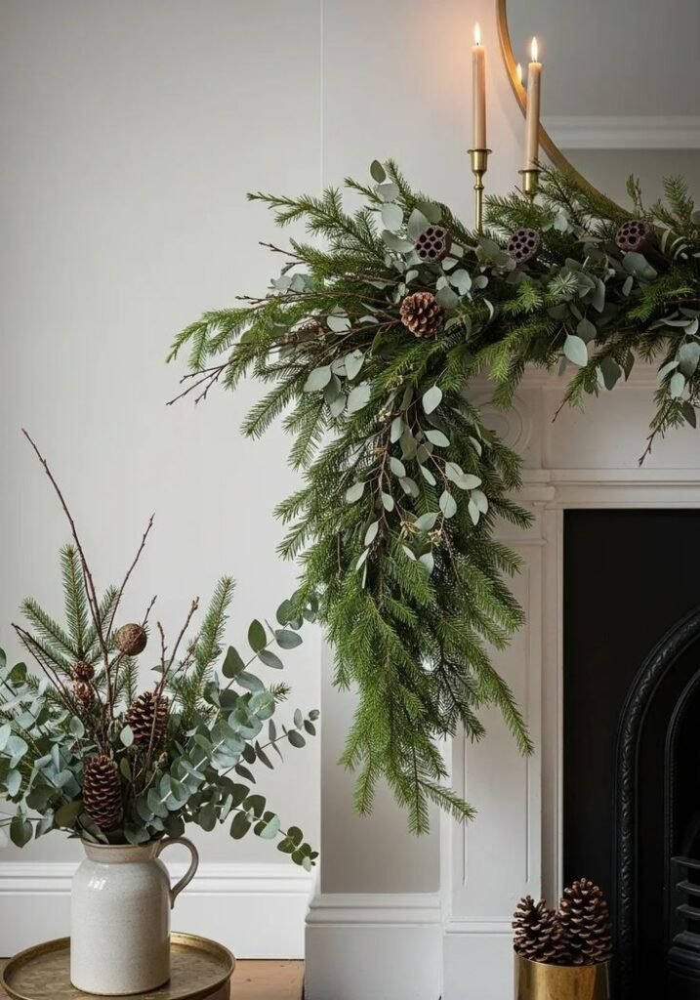
18. Wooden Snowflake Wall Art
Wood crafts tend to feel timeless in a way plastic decor rarely manages, and wooden snowflakes are no exception.
Simple cut shapes, left unpainted or finished in a neutral stain, read as considerably more sophisticated than a typical craft-store ornament.
Keeping the finish neutral also means they can stay up through the entire winter season rather than coming down the moment the holidays end.
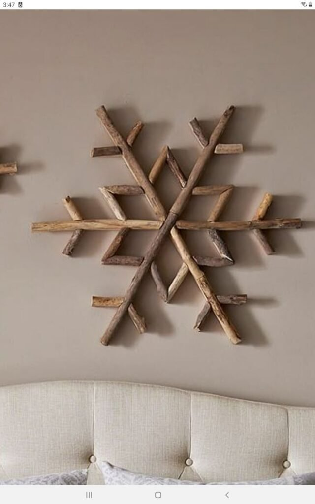
19. Mason Jar Winter Lanterns
Mason jars show up constantly in winter crafting for good reason, they're cheap, versatile, and genuinely useful once converted into a lantern.
A lantern-style jar filled with a flameless candle adds soft, ambient lighting without overpowering the rest of a room's lighting.
Wrapping the jar with twine, a bit of greenery, or a strip of birch bark finishes the look and ties it into a broader winter palette.
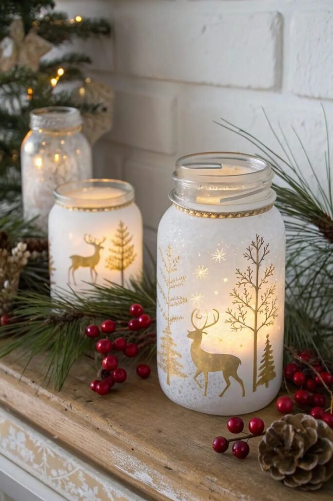
12 Pack 16 oz Clear Glass Mason Jars with Twine, 3 x 5 Inch
Shop on AmazonVinkor Flameless Pillar Candles, Real Wax, Battery Operated with Remote, Set of 9
Shop on Amazon20. Chunky Yarn Winter Wreath
A chunky yarn wreath reads as considerably more expensive than it actually costs to put together.
Wrapping thick, textured yarn around a simple wire or foam base builds real volume fast, and it instantly warms up an entryway the moment it goes up.
Adding a few pinecones or dried orange slices tucked into the yarn gives it an extra touch of winter flair without much additional effort.
Cozyful Chunky Chenille Yarn for Hand Knitting, #10 Jumbo Blanket Yarn
Shop on Amazon14 Inch Natural Grapevine Wreath Form, 2 Pack
Shop on AmazonChoosing the Right Winter Craft
The best winter craft is one that actually matches the rest of a home's existing style, rather than introducing something that'll need to be put away the moment the season changes. Leaning into texture over color tends to work especially well for winter, knits, felt, raw wood, and frosted glass all read as seasonal without needing a single ounce of red or green anywhere in the mix.

DWIL Frosted Glass Paint, 5 oz, Window Privacy Paint, Waterproof
Shop on AmazonWhy Winter Crafting Feels Different
Winter crafts tend to create an instant sense of coziness that's hard to replicate with store-bought decor alone. Indoor time stretches out during the colder months, which makes crafting feel like a genuinely good use of an evening rather than a weekend obligation. Many of these projects also double as budget-friendly decor, filling a mantel or entryway for a fraction of what a store-bought equivalent would cost.

4 Pack Warm White Battery Operated Fairy Lights, 16 Ft, 50 LED
Shop on AmazonFinal Thoughts
None of these twenty crafts require a big budget or advanced skill to pull off. A ball of chunky yarn, a handful of pinecones, or a few mason jars can turn into something that genuinely elevates a room for the whole season.
The best winter crafts tend to be the ones that stay up well past the holidays themselves, texture and neutral tones over anything too literally festive, built to last through the entire cold season rather than just a few weeks in December.